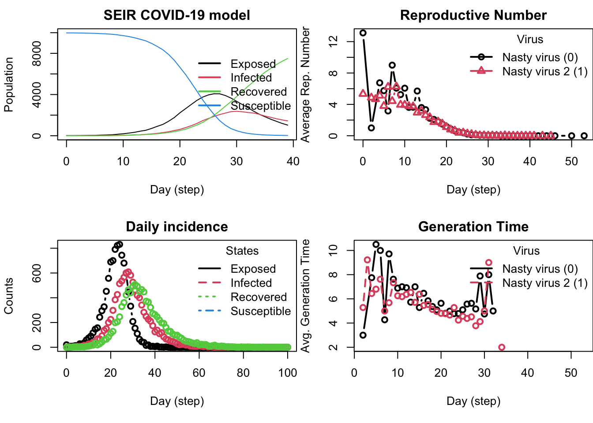
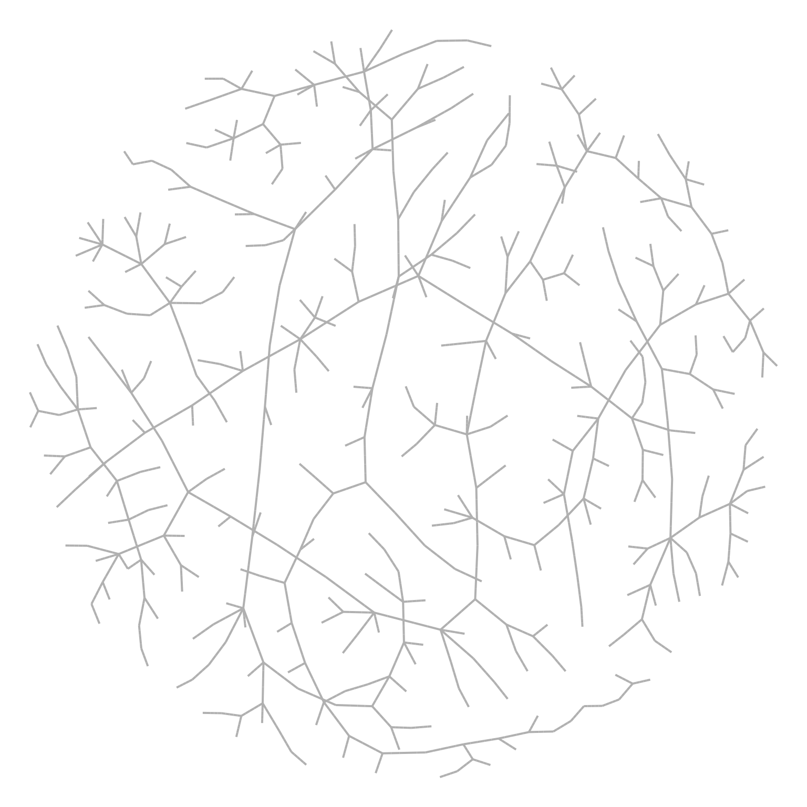

library(epiworldR)# Create a modelmymodel <-ModelSEIRCONN(name ="Nasty virus", n =10000, prevalence = .001, contact_rate =4,transmission_rate = .4, incubation_days =7, recovery_rate =1/7) |>verbose_off() # Add a second virusadd_virus( mymodel, virus(name ="Nasty virus 2",prob_infecting = .5,recovery_rate = .3, ), proportion = .001)# Rename the modelset_name(mymodel, mname ="SEIR COVID-19 model")# Run the modelset.seed(8383)run(mymodel, ndays =100)# Plot the model# - Set graphical parameters to plot in 2x2 gridop <-par(mfrow =c(2, 2), mar =par()$mar *c(1, 1, 1/2, 0))# - Plotplot(mymodel)plot_reproductive_number(mymodel)plot_incidence(mymodel)plot_generation_time(mymodel)# - Restore original graphical parameterspar(op)

Figure 1
Welcome to the Sunbelt 2025 workshop Simulating Complex Agent-Based Models with epiworldR. The epiworldR R package is a wrapper of the C++ library epiworld. It provides a general framework for modeling disease transmission using agent-based models.
Key features include:
Fast simulation with an average of 30 million agents/model-step/second
Adapting transmission and recovery rates based on comorbidities
Simultaneous simulation of multiple diseases
User-defined intervention policies/tools
Parallel computing out-of-the-box
Code
sir <-ModelSIR(name ="COVID-19",prevalence = .01,transmission_rate = .5,recovery_rate = .5 ) |># Adding a Small world population agents_smallworld(n =500, k =10, d =FALSE, p = .01) |># Running the model for 50 daysverbose_off() |>run(ndays =50, seed =1912)## Transmission networknet <-get_transmissions(sir)## Plottinglibrary(netplot)library(igraph)x <-graph_from_edgelist(as.matrix(net[,2:3]) +1)nplot(x, edge.curvature =0, edge.color ="gray", skip.vertex=TRUE)

Figure 2: Example transmission network generated by epiworldR (plotted with netplot)
Workshop Details
If you don’t want to use your personal computer, we have an online RStudio server available for you to use.1
Schedule
(10 min) Setup
(50 min) Part 1: Basic Modeling
(10 min) Break
(30 min) Part 2a: Social Network Analysis
(30 min) Part 2b: Adding Multiple Diseases & Tools
(10 min) Break
(40 min) Part 3: Multiple Runs
Install epiworldR
You can install the latest stable version of epiworldR from CRAN:
Agent-based modeling (ABM) is a powerful computational approach that enables the simulation and analysis of complex systems by representing individual agents and their interactions within an environment. ABM provides a bottom-up perspective, allowing for the examination of emergent phenomena arising from the collective behavior of autonomous agents. By capturing the heterogeneity, autonomy, and adaptive nature of agents, ABM offers a versatile tool for investigating various domains, including social sciences, economics, biology, and epidemiology, offering valuable insights into the dynamics and patterns that emerge from the interactions of individual entities within a larger system.
Relevant Terminology
epiworldR focuses heavily on epidemiological applications to social networking. Below are some common terms that will be used throughout:
SEIR, SIR, SIS, etc.: These are epidemiological models that are used to analyze the spread and dynamics of diseases in a population. These models are a combination or selection of the states susceptible, exposed, infected, and/or recovered, in which all individuals in a population can be categorized in.
SEIR connected (SEIRCONN), SIR connected (SIRCONN), etc.: These are epidemiological models that are similar to their above counterparts (SEIR, SIR, etc.), but with the assumption that each individual agent is connected to all other agents.
Reproductive number: The average number of secondary transmissions from one infected person. For example, a reproductive number of 2.0 indicates that one infected person transmits the disease to two other people in the population on average.
Incidence: The the occurrence of new cases of disease or injury in a population over a specified period of time. Specifically, daily incidence is computed in epiworldR.
About the Instructors
Andrew Pulsipher is a software developer and Dr. George G. Vega Yon is a Research Assistant Professor of Epidemiology at the University of Utah’s School of Medicine.
Footnotes
Please note that the online RStudio server and your data stored in it will be available for two weeks after the workshop. After that, the server will be shut down and all data will be deleted. If you would like to keep your data, please download it before the server is shut down.↩︎